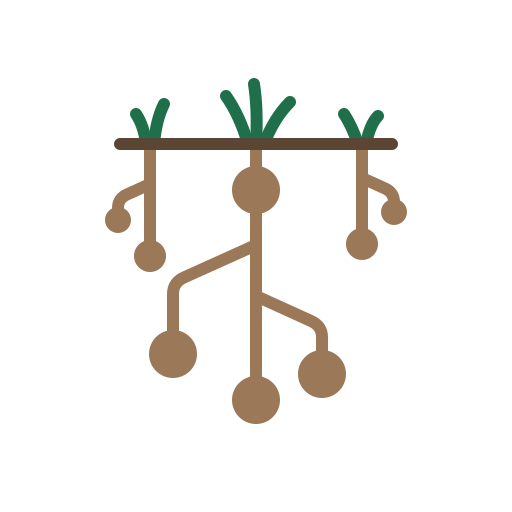

pronounced wohk/ē/eye
The love of money and the love of power are the root of all kinds of evil. We’re the people who kept paying attention anyway.
wokeai is a grassroots, open-source community for people using their own AI to push back against systemic oppression: students, independent researchers, organizers, builders, and people who have been on the wrong end of the system and know exactly what it costs. Not a product. A place to gather, a list of open tools that already exist, and the people who want to build the next ones, in the open, where nobody can take them private.
Right now, in this country, Black and Brown people from communities on the margins are being rounded up en masse. Children stand in front of judges with no family and no lawyer. Citizens’ children are put on deportation flights. There are camps. We use those words on purpose, and we show our work: read the covenant.
Go straight at who owns the means of production. Without a drop of blood.
We don’t mean an uprising. No serious person should propose that here, and we never will. We mean transitional living worker co-ops: businesses owned by the people who do the work, where the highest-paid person makes at most three times the lowest, where profits are split close to evenly, and where people from the margins come through a program that starts at the roots of their trauma, find the work they are built for, and leave with real equity. Build enough of those and you have changed who owns things. That is what revolutionary means to us.
A starter list of existing open-source projects for running and studying AI on your own terms. We don't make these; we point to them. More to come as the community adds what it uses.
wōke•ĀĪ is what it does NOT sound like. wokeai is pronounced wohk/ē/eye (3 syllables).
wokeai is one word, always lowercase. The spelling says one thing to a glance. We’ll tell you how it’s said.
We’re in our first days and there’s no budget, so we start with what we have: a repository, a list of tools, and each other. Read the covenant. Bring the tools you use. Tell someone who is being crushed right now that there is a place.
Join on GitHub Buy me a coffee
The coffee link goes to Buy Me a Coffee; nothing from them loads on this page.